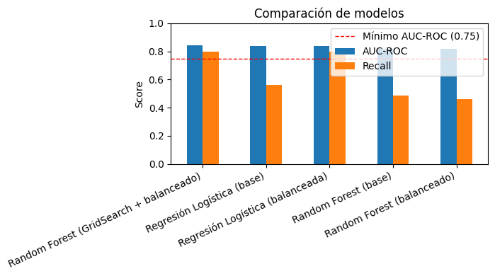
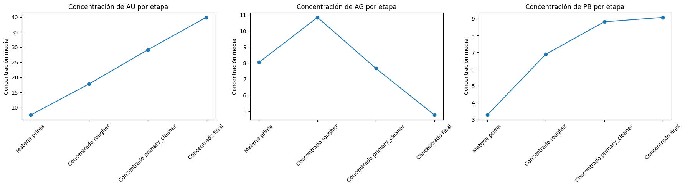

Data Scientist Jr · Python · SQL · Machine Learning
Luis Antonio Hernández Ruiz
Construyo modelos de machine learning que se pueden explicar y que responden a una pregunta de negocio. Busco la solución más simple que resuelva el problema y traduzco las métricas a decisiones.
Soy egresado del bootcamp de Ciencia de Datos de TripleTen (2026). Antes de dedicarme a los datos trabajé 4 años en soporte técnico y desarrollo de sistemas en el sector público, donde aprendí a escuchar a los usuarios y a convertir procesos informales en procesos medibles.
En mis proyectos me importa tanto el modelo como la decisión que permite tomar. Cuando dos modelos rinden casi igual, elijo el que se puede explicar y mantener.
Rol que busco
Data Scientist / Data Analyst Jr
Ubicación
Naucalpan, Estado de México · híbrido
Formación
Data Science Bootcamp, TripleTen (2025–2026)
Idiomas
Español nativo · Inglés avanzado
Proyectos
Tres proyectos de machine learning con el código completo, los datos y la explicación de cada decisión en GitHub.
Predicción de cancelación de clientes (churn) para una empresa de telecomunicaciones
Proyecto final
Interconnect quería saber qué clientes estaban por darse de baja para ofrecerles promociones de retención a tiempo.
0.84
AUC-ROC en prueba
0.80
Recall: 8 de cada 10 bajas detectadas
~$27K
USD/mes en ingresos que se podrían retener
Datos
4 tablas (contratos, datos demográficos, internet y telefonía) de 7,043 clientes, unidas por customerID.
Decisiones clave
Construí la variable objetivo a partir de la fecha de baja y la eliminé de las variables para evitar fuga de datos.
Rellené los servicios no contratados con "No service" en lugar de imputarlos, para no inventar información.
Como solo el 27% de los clientes se da de baja, apliqué balanceo de clases: el Recall subió de 0.56 a 0.80.
Elegí la Regresión Logística sobre un Random Forest optimizado (0.839 frente a 0.842 de AUC-ROC). Rinde casi igual, es más rápida de reentrenar y marketing puede entender sus coeficientes.

Comparación de los 5 modelos probados.
Limitaciones y siguientes pasos
La precisión es de 0.50: hay 371 falsas alarmas. Son baratas (una promoción de más), pero ajustar el umbral de decisión según el costo de cada error mejoraría el balance.
Los datos son una sola fotografía (febrero de 2020) de una empresa ficticia.
Predicción de recuperación de oro en un proceso industrial
Predecir el porcentaje de oro recuperado en dos etapas de una planta de purificación, para optimizar la producción y detectar parámetros no rentables.
7.44
sMAPE combinado en prueba (menor es mejor)
8.82
sMAPE en validación cruzada: sin sobreajuste
3,200+
registros inválidos detectados y eliminados
Decisiones clave
Validé el objetivo: recalculé la recuperación con la fórmula del proceso y obtuve un error prácticamente de 0, así que el dato es confiable.
Evité la fuga de datos: excluí 34 variables que se miden después del proceso y no estarían disponibles al predecir.
Rellené los nulos con ffill/bfill porque los datos son una serie de tiempo.
Comparé Regresión Lineal, Árbol de Decisión y Random Forest con validación cruzada y una métrica sMAPE propia (25% etapa rougher + 75% etapa final). Los modelos de árboles ganaron, lo que indica relaciones no lineales.

La concentración de oro aumenta en cada etapa (de ~8 a ~40).
Limitaciones y siguientes pasos
Random Forest y el Árbol de Decisión quedaron casi empatados (8.82 frente a 8.84). El árbol también sería defendible por ser más simple.
Los datos vienen de una sola planta, así que habría que validar el modelo con datos más recientes.
Selección de región para nuevos pozos petroleros con análisis de riesgo
OilyGiant necesitaba decidir en cuál de tres regiones abrir 200 pozos, con un presupuesto de $100 M USD y un riesgo de pérdida máximo del 2.5%.
~$6.65 M
USD de beneficio promedio en la región elegida
0.3%
riesgo de pérdida (límite: 2.5%)
1,000
muestras bootstrap por región
Decisiones clave
Entrené una Regresión Lineal por región para predecir el volumen de reservas de 100,000 pozos.
La función de ganancia elige los 200 pozos con mayor predicción, pero calcula el ingreso con sus reservas reales.
Con bootstrapping estimé el beneficio, el intervalo de confianza al 95% y el riesgo de pérdida de cada región.
Cambié mi recomendación: el análisis inicial elegía la Región 0 por su ganancia, pero al medir el riesgo la Región 1 resultó mejor. Su modelo es mucho más preciso (RMSE 0.89 frente a ~38).
Resultado del bootstrapping
Región
Beneficio promedio
Riesgo
0
$6.01 M
2.0%
Cumple
1 ✓
$6.65 M
0.3%
Elegida
2
$6.16 M
3.0%
Descartada
Limitaciones y siguientes pasos
Los datos son sintéticos.
Me gustaría agregar un análisis de sensibilidad (otro número de pozos u otro umbral de riesgo) y revisar los residuales del modelo.
Pythonpandasscikit-learnRegresión LinealBootstrappingAnálisis de riesgo
Experiencia profesional relacionada con datos, sistemas y usuarios.
Unidad de Apoyo Técnico e Informática
ago. 2022 – actualidad
SAASCAEM · Organismo público del Gobierno del Estado de México
Desarrollé SAASCANET, la intranet institucional para ~110 usuarios (PHP, MySQL, JavaScript), que reemplazó las solicitudes de soporte informales por tickets con folio, responsable y tiempo de resolución.
Diseñé la base de datos y los reportes que miden qué áreas piden más soporte y en cuánto tiempo se resuelve, generando evidencia para auditorías y control interno.
Coordiné una fase beta con encuesta a usuarios para priorizar mejoras con base en su retroalimentación.
Supervisor de Turno
jun. 2019 – jun. 2022
Starbucks Coffee México
Coordiné operaciones, inventario y equipo de trabajo, y analicé indicadores operativos para apoyar decisiones.
Habilidades
Herramientas que he usado en proyectos completos.
Lenguajes y datos
PythonSQLPostgreSQLMySQLpandasNumPy
Machine Learning
scikit-learnLightGBMClasificaciónRegresiónValidación cruzadaBalanceo de clases
Análisis y estadística
EDAPruebas de hipótesisBootstrappingMatplotlibSciPy
Herramientas
GitGitHubJupyterQGISPHPJavaScript
Hablemos
Busco mi primera oportunidad como Data Scientist o Data Analyst Jr. Si tienes una vacante o quieres platicar sobre algún proyecto, escríbeme.